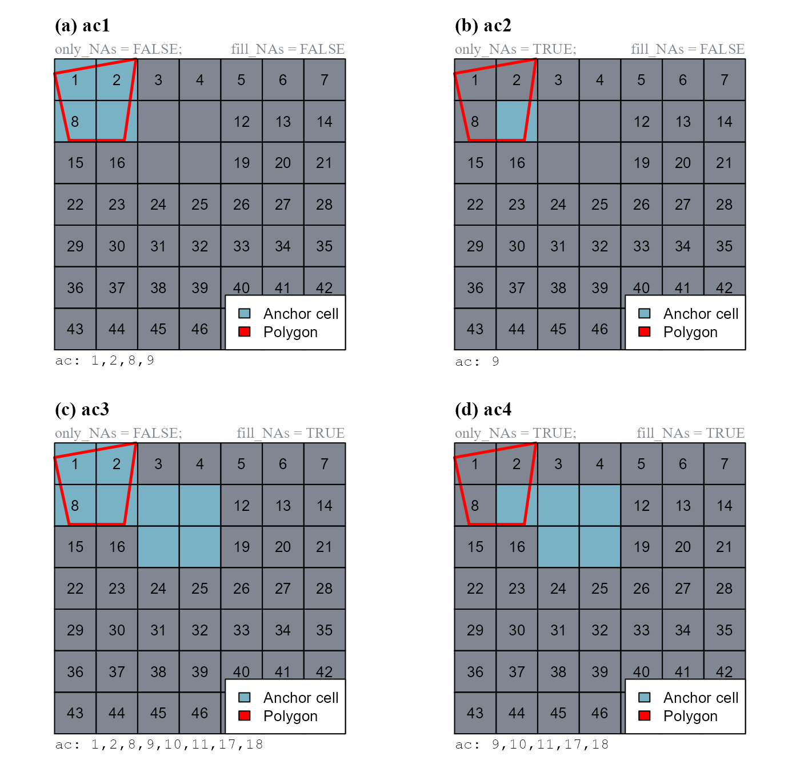
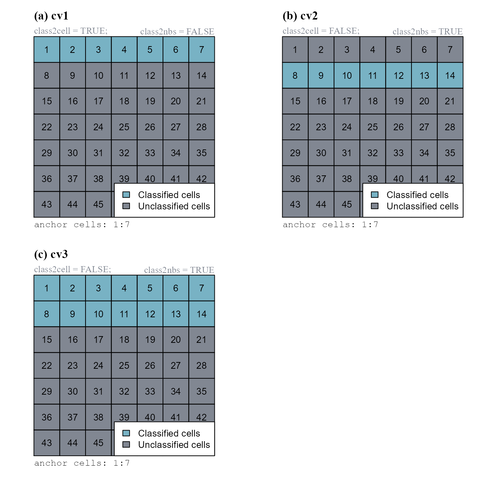

vignettes/articles/scapesClassification_01_3_ClassFunctions.Rmd
scapesClassification_01_3_ClassFunctions.RmdClass vectors store function classifications by mapping raster cells to numeric classes (or to NA-values if no class is attributed). They are central to all classification funtions and present the following characteristics:
The nth element of a class vector corresponds to the raster cell stored in the nth row of the attribute table.
They serve both as function input and output.
As inputs, they provide information about what cells have been classified allowing a focal evaluation of classification rules.
Every time a class vector is provided as a function input, it is updated by assigning a numeric class to unclassified cells that meet function conditions.
The sequential update of a class vector allows users to design multi-step classifications.
We will use a single-layer dummy raster to illustrate scapesClassification functions. We will start by computing its attribute table (where the raster is named "dummy_var") and its list of neighborhoods.
# LOAD LIBRARIES
library(scapesClassification)
library(terra)
# LOAD THE DUMMY RASTER
r <- list.files(system.file("extdata", package = "scapesClassification"),
pattern = "dummy_raster\\.tif", full.names = T)
r <- rast(r)
# COMPUTE THE ATTRIBUTE TABLE
at <- attTbl(r, "dummy_var")
head(at, 3)
## Cell dummy_var
## 1 1 1
## 2 2 1
## 3 3 1
# COMPUTE THE LIST OF NEIGBORHOODS
nbs <- ngbList(r)
head(nbs, 3)
## $`1`
## [1] 2 8 9
##
## $`2`
## [1] 1 3 8 9 10
##
## $`3`
## [1] 2 4 9 10 11In the following examples we will show how class vectors are computed. However, in order to improve the reading experience, the plots’ code is hidden. It can be accessed in the *.RMD file used to generate the html file.
The plotting procedure is to (i) convert a class vectors into a raster using the function
cv.2.rast()and (ii) useterra::plot()or any other software suitable for raster plots.
Functions: anchor.svo(), anchor.cell(), cond.4.all() and peak.cell().
Anchor cells can be thought of as raster cells having particular characteristics from where the classification process can start. Once identified, they can serve as focal cells around which new classification rules can be implemented. Anchor cells can be derived by: previous classifications, areas of constant environmental or geographic characteristics (e.g., flat areas), local maxima or minima (e.g., local peaks on a mountain ridge) or spatial objects (e.g., shapefiles).
Anchor cell functions can be easily identified because they do not necessarily require a class vector as an input.
The function anchor.svo() returns a vector of cell numbers extracted at the locations of a spatial object. To show its functioning, we will add some NA-values to the dummy raster and we will create a polygon.
# CELL NUMBERS OF THE DUMMY RASTER
r_cn <- rast(matrix(1:49, nrow = 7, byrow = TRUE)) # Dummy raster cell numbers
# SET SOME NA-VALUE
r_cn[c(9, 10, 11, 17, 18)] <- NA
# BULD A DUMMY POLYGON
pol <- rbind(c(0,0.95), c(0.28,1), c(0.24, 0.72), c(0.05,0.72), c(0,0.95))
pol <- terra::vect(pol, type="polygons")The way cell numbers are extracted depends on two function arguments: only_NAs and fill_NAs (Figure 1).
# a. ac1, only_NAs = FALSE; fill_NAs = FALSE
ac1 <- anchor.svo(r_cn, pol, only_NAs = FALSE, fill_NAs = FALSE)
# b. ac2, only_NAs = TRUE; fill_NAs = FALSE
ac2 <- anchor.svo(r_cn, pol, only_NAs = TRUE, fill_NAs = FALSE)
# c. ac3, only_NAs = FALSE; fill_NAs = TRUE
ac3 <- anchor.svo(r_cn, pol, only_NAs = FALSE, fill_NAs = TRUE)
# d. ac4, only_NAs = TRUE; fill_NAs = TRUE
ac4 <- anchor.svo(r_cn, pol, only_NAs = TRUE, fill_NAs = TRUE)
c(9, 10, 11, 17, 18)).
The function anchor.cell() converts a vector of cell numbers (argument anchor) into a class vector. The conversion depends on two function arguments: class2cell and class2nbs.
We will show how the function works considering anchor = 1:7 (Figure 2).
# CELL NUMBERS OF THE DUMMY RASTER
r_cn <- rast(matrix(1:49, nrow = 7, byrow = TRUE)) # Dummy raster cell numbers
# a. cv1, class2cell = TRUE; class2nbs = FALSE
cv1 <- anchor.cell(attTbl = at, SpatRaster = r_cn, class = 10, anchor = 1:7,
class2cell = TRUE,
class2nbs = FALSE)
# b. cv2, class2cell = FALSE; class2nbs = TRUE
cv2 <- anchor.cell(attTbl = at, SpatRaster = r_cn, class = 10, anchor = 1:7,
class2cell = FALSE,
class2nbs = TRUE)
# c. cv3, class2cell = TRUE; class2nbs = TRUE
cv3 <- anchor.cell(attTbl = at, SpatRaster = r_cn, class = 10, anchor = 1:7,
class2cell = TRUE,
class2nbs = TRUE)
anchor) into a class vector. The input vector was 1:7. Raster values are cell numbers.
Note that as the argument class = 10, classified cells have class 10.
at$Cell[which(cv1 == 10)]
## [1] 1 2 3 4 5 6 7
at$Cell[which(cv2 == 10)]
## [1] 8 9 10 11 12 13 14
at$Cell[which(cv3 == 10)]
## [1] 1 2 3 4 5 6 7 8 9 10 11 12 13 14The function cond.4.all() evaluates absolute test cell conditions for unclassified cells and classify them if conditions are true. It performs global evaluations.
The function can either return a new class vector (when no class vector input is provided) or update an existing class vector (i.e. classification number assigned only to unclassified cells meeting conditions). As an example we will first compute a new class vector with the rule "dummy_var <= 1", and then update the same class vector with the rule "dummy_var <= 3" (Figure 3).
# a. cv1, compute new class vector
cv1 <- cond.4.all(attTbl = at, cond = "dummy_var <= 1", class = 1)
# b. cv2, update class vector `cv1`
cv2 <- cond.4.all(attTbl = at, cond = "dummy_var <= 3", class = 2,
classVector = cv1) # Update cv1cv1). (b) The class vector cv1 is updated and stored as cv2.
Note that cv1 has only one class (1); cv2 has two classes (1,2).
The function peak.cell() identify local maxima or minima on a raster surface. A local maximum is defined as a cell on a raster surface with all neighboring cells having smaller values. A local minimum is defined as a cell on a raster surface with all neighboring cells having larger values (Figure 4). The argument p_edge determines if the search area includes edge cells (cells on the edge of the raster and cell neighboring NA-cells).
# FIND LOCAL MAXIMA
# a. lm1, p_edge = FALSE
lm1 <- peak.cell(attTbl = at, ngbList = nbs, p_edge = FALSE,
p_col = "dummy_var", p_fun = "max")
# b. lm2, p_edge = TRUE
lm2 <- peak.cell(attTbl = at, ngbList = nbs, p_edge = TRUE,
p_col = "dummy_var", p_fun = "max")
# FIND LOCAL MINIMA
lmin <- peak.cell(attTbl = at, ngbList = nbs, p_edge = TRUE,
p_col = "dummy_var", p_fun = "min")
# JOIN LOCAL MINIMA AN MAXIMA IN THE SAME CLASS VECTOR
lm1[!is.na(lmin)] <- 2
lm2[!is.na(lmin)] <- 2p_edge=FALSE. (cv1). (b) Argument p_edge=TRUE.
Functions: cond.4.nofn(), cond.reclass() and cond.4.all().
User condition functions present the cond argument and generally require a class vector as input. Excluding the function cond.4.all() (that can be considered both an anchor cell and a user condition function), user condition functions always perform focal evaluations. Focal evaluations only test classification rules at positions contiguous or continuous to focal cells. Focal cells have to be identified using the function argument nofn.
Class continuity is taken into account when the classification number assigned with the function argument class is also included in the argument nofn.
The function cond.4.nofn() evaluates conditions for cells neighboring specific classes and classify them if conditions are true. The function performs focal evaluations and can evaluate any type of conditions.
Let us assume that cell 25 is our initial focal cell.
# SET CELL 25 AS A FOCAL CELL (class = 0)
at$cv[at$Cell == 25] <- 0We can now evaluate the absolute neighborhood condition "dummy_var{} >= 3" for cells contiguous and/or cell continuous to the focal cell (Figure 5). We will set the argument peval = 1, meaning that a test cell is classified only if its value and the value of all its neighboring cells is >=3.
# a. cv1, "dummy_var{} >= 3", CLASS CONTINUITY: NO
cv1 <- cond.4.nofn(attTbl = at, ngbList = nbs, classVector = at$cv,
nbs_of = 0, # Focal cell class
class = 1, # Classification number
# ABSOLUTE NEIGHBORHOOD CONDITION (peval = 9/9)
cond = "dummy_var{} >= 3", peval = 9/9)
# b. cv2, "dummy_var{} >= 3", CLASS CONTINUITY: YES
cv2 <- cond.4.nofn(attTbl = at, ngbList = nbs, classVector = at$cv,
nbs_of = c(0, # Focal cell class
1), # Classification number
class = 1, # Classification number
# ABSOLUTE NEIGHBORHOOD CONDITION (peval = 9/9)
cond = "dummy_var{} >= 3", peval = 9/9)peval = 9/9 (test cells are classified only if their value and the value of all their neighbors are >=3; 9 out of 9 positive evaluations). (a) The function do not consider class continuity. (b) The function consider class continuity.
The function cond.reclass() evaluates conditions for cells of a class and reclassifies them if conditions are true. It can evaluate absolute conditions and relative neighborhood conditions.
In the following example we will use the latest class vector we computed (cv2). Classified cells (having class = 1) will be reclassified if 6/9 of the values including test cells and relative neighborhoods are >=5 (absolute neighborhood condition, "dummy_var{} >= 5"; peval = 6/9) (Figure 6).
# RECLASSIFY
cv2_rclass <- cond.reclass(attTbl = at, ngbList = nbs, classVector = cv2,
# CELLS TO RECLASSIFY HAVE THIS CLASS
class = 1,
# CELL MEETING CONDITIONS HAVING CLASS = 1 ARE RECLASSIFIED
cond = "dummy_var{} >= 5",
# NEW CLASSIFICATION NUMBER
reclass = 2,
# RULE HAS TO BE TRUE FOR AT LEAST 6/9 EVALUATIONS
peval = 6/9)cv2 computed by the function cond.4.nofn. (b) cells meeting conditions are reclassified.
Note that cv2 has only 2 classes (0,1); cv2_rclass has 3 classes (0,1,2).
Functions: reclass.nbs() and classify.all().
Neighbor only functions do not present a cond argument. Their classifications are exclusively based on the the spatial relationships existing among groups of cells of having different classes.
The function reclass.nbs() evaluates if members of two classes are contiguous and, if they are, one of them is reclassified.
In the following example we will: (a) compute a class vector of two classes using cond.4.all(); (b) reclassify cells of class 2 contiguous to cells of class 1 (reclass_all=FALSE); (c) reclassify cells of class 2 showing class continuity with cells of class 1 (reclass_all=TRUE) (Figure 7).
# (a) COMPUTE INITIAL CLASS VECTOR
# cv, step1
cv <- cond.4.all(attTbl = at, cond = "dummy_var == 10", class = 1)
# cv, step2
cv <- cond.4.all(attTbl = at, cond = "dummy_var >= 3", class = 2, classVector = cv)
# RECLASSIFY NEIGHBORS
# (b) rcl_ngb1, RECLASSIFY NEIGHBORS (reclass_all = FALSE)
rcl_ngb1 <- reclass.nbs(attTbl = at, ngbList = nbs, classVector = cv,
class = 2, # cells of class 2...
nbs_of = 1, # ...adjacent to cells of class 1...
reclass = 3, # ...will be reclassified as cells of class 3.
reclass_all = FALSE)
# (c) rcl_ngb2, RECLASSIFY NEIGHBORS (reclass_all = TRUE)
rcl_ngb2 <- reclass.nbs(attTbl = at, ngbList = nbs, classVector = cv,
class = 2, nbs_of = 1, reclass = 3,
# All cells of class 2 connected to a reclassified cell are reclassified.
reclass_all = TRUE)cond.4.all(). (b) Cells of class=2 contiguous to the cell of class=1 are reclassified. (c) Cells of class=2 connected to a reclassified cell are also reclassified.